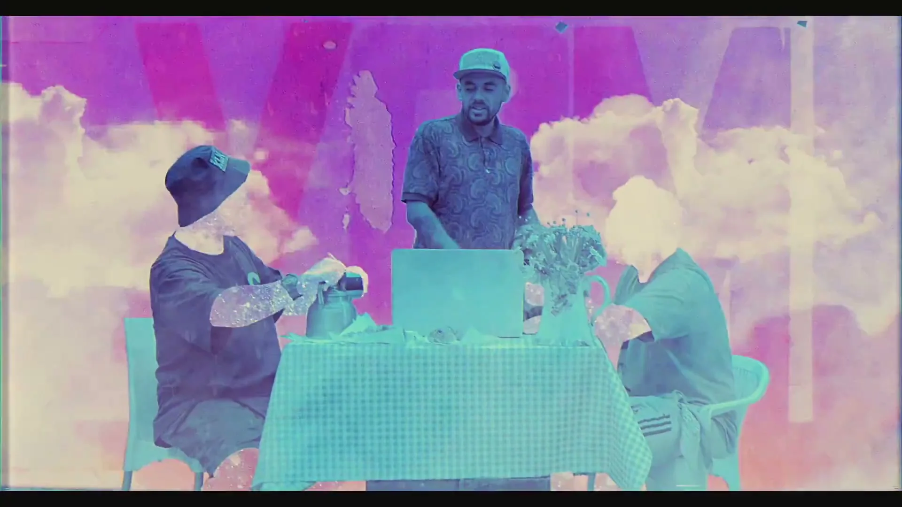
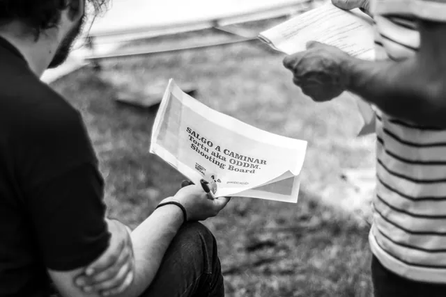
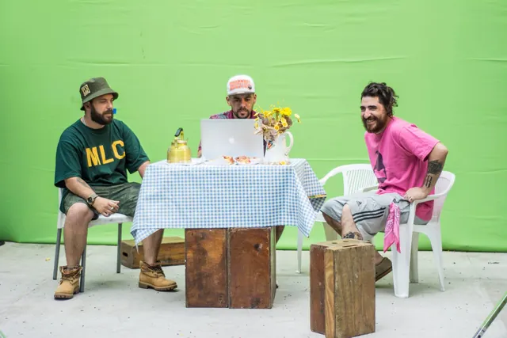
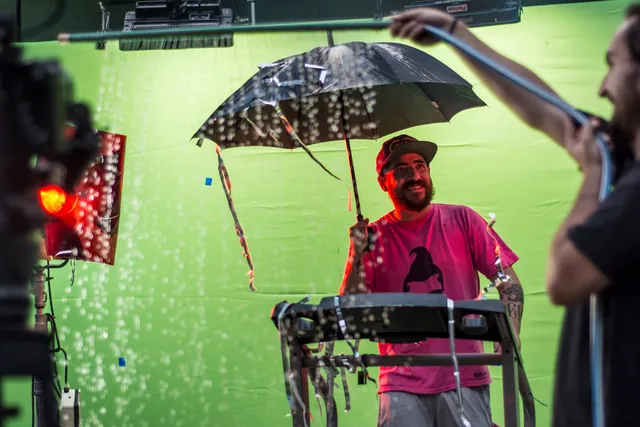
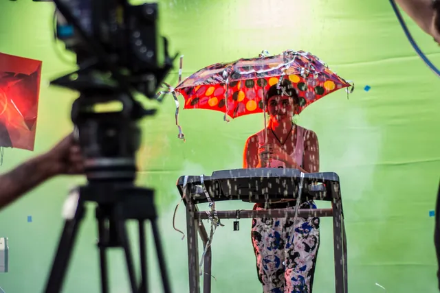
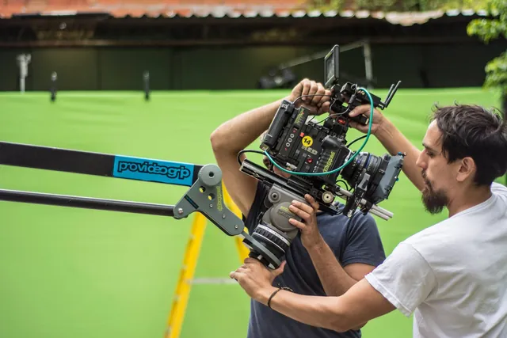
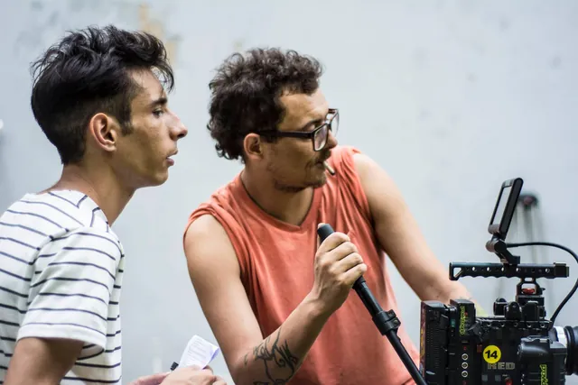

Videoclip · 2017
Salgo a Caminar
Dirección, storyboard, montaje y VFX: Julián Sequeira.

El videoclip
Un videoclip de Tortu aka O.d.d.M dirigido por Julián Sequeira, que también hizo el storyboard, el montaje y los efectos visuales.
En el rodaje
Ampliar: 
El shooting board, en mano. Ampliar: 
La escena de la mesa, contra el croma. Ampliar: 
Lluvia artificial en el set de croma. Ampliar: 
Plano con paraguas, visto desde atrás de cámara. Ampliar: 
Equipo de cámara en el set de croma. Ampliar: 
Junto a la cámara.


Créditos
- Artista
- Tortu aka O.d.d.M
- Dirección, storyboard, montaje y VFX
- Julián Sequeira